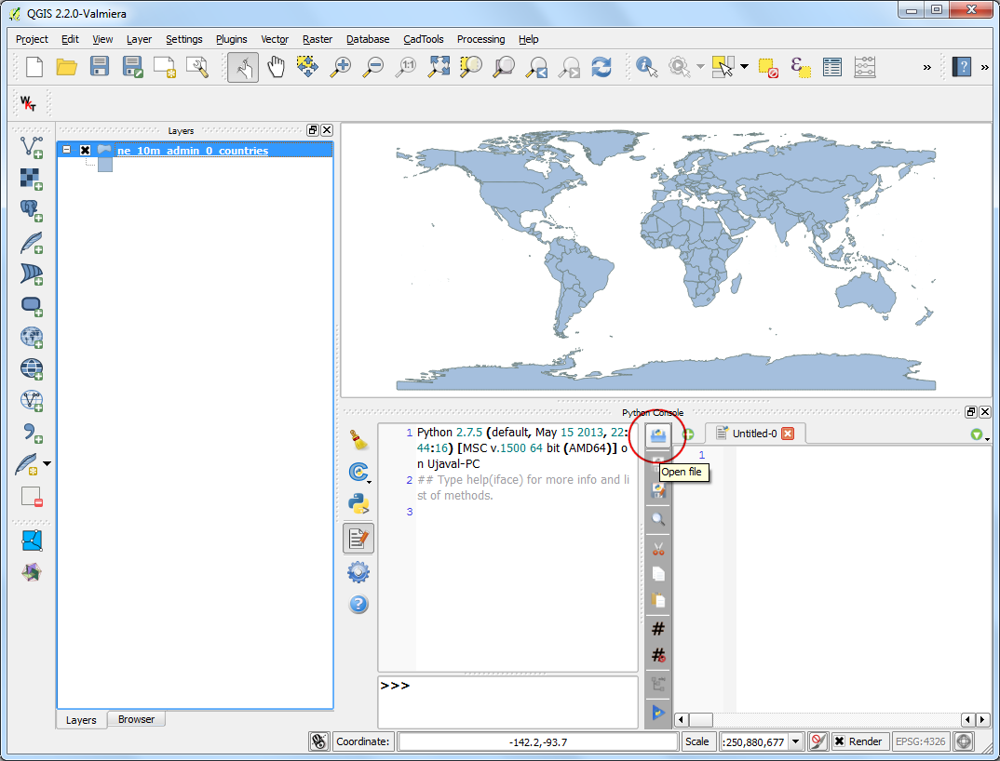

Căutarea și descărcarea datelor OpenStreetMap
[ Download PDF A4 Letter ]
Obținerea unor date de înaltă calitate este esențială pentru orice activitate GIS. O resursă generoasă de date gratuite și licențiate în mod liber este OpenStreetMap(OSM). Baza de date OSM conține străzi, date locale, precum și poligoane ale construcțiilor. Accesarea bazei de date OSM, într-un format GIS, este parte integrantă a QGIS. Acest ghid explică procesul de căutare, descărcare și utilizare a datelor OSM în QGIS.
Privire de ansamblu asupra activității
Căutarea Londrei în baza de date OSM, răsfoirea și selectarea unei părți a orașului, și extragerea locațiilor tuturor pub-urilor sub forma unui fișier shape.
Procedura
Vom folosi 2 plugin-uri pentru a realiza această activitate. Asigurați-vă că ați instalat plugin-urile OSM Place Search și OpenLayers. Parcurgeți Utilizarea Plugin-urilor pentru instrucțiuni despre modul de descărcare a plugin-urilor.

Plugin-ul OSM Place Search se va instala într-un Panou din QGIS. Veți vedea un panou nou, intitulat OSM place search....

Plugin-ul OpenLayers este instalat în meniul Plugin. Acest plugin permite, în QGIS, accesarea hărților topografice ale diverșilor furnizori. Haideți să încărcăm harta de bază OpenStreetMap, apelând .

Veți vedea o hartă a lumii, încărcată în QGIS.
Note
Dacă nu vedeți nici un fel de date - asigurați-vă că sunteți on-line - atât timp cât imaginile hărții de bază sunt preluate de pe internet. Puteți folosi, de asemenea, instrumentul Pan pentru a muta ușor suportul hărții, ceea ce va declanșa o actualizare a hărții de bază.

Acum, haideți să filtrăm după London. Introduceți interogarea în câmpul Name contains... din panoul OSM Place Search. Aveți posibilitatea să faceți clic pe oricare rezultat, locul respectiv evidențiindu-se pe hartă. Selectați primul rezultat - care este orașul Londra, din Marea Britanie - apoi apăsați butonul Zoom.

Veți vedea stratul de bază deplasându-se și centrându-se în dreptul orașului Londra. Puteți utiliza instrumentul Zoom pentru a mări și selecta cu precizie zona de interes. Pentru acest tutorial, veți mări centrul orașului, după cum se arată mai jos.

Acum putem descărca datele afișate pe suportul hărții. Mergeți la .

În dialogul Download OpenStreetMap data, alegeți From map canvas, și completați coordonatele Granițelor. Specificați calea și numele fișierului de ieșire london.osm.

Fișierul descărcat cu extensia .osm este un fișier text în formatul XML OSM. În primul rând, trebuie să-l convertim într-un format adecvat, care este ușor de a folosit în QGIS. Mergeți la .
Note
Acum, că nu mai avem nevoie de funcționalitatea OSM Place Search, aveți posibilitatea să faceți clic pe butonul de închidere, pentru a o elimina de pe fereastra principală. Dacă aveți nevoie să o folosiți din nou, o puteți activa din (Windows) sau (Linux).

Navigați către fișierul descărcat london.osm, în Input XML file. În câmpul Output SpatiaLite DB file specificați london.osm.db. Asigurați-vă că ați bifat Create connection (SpatiaLite) after import.

Acum, ultimul pas. Trebuie să creăm straturi cu geometrie SpatialLite, care să poată fi vizualizate și analizate în QGIS. Acest lucru se face cu ajutorul .

Fișierul london.osm.db conține toate tipurile de entități ale bazei de date OSM - puncte, linii și poligoane. Straturile GIS conțin, de obicei, doar un singur tip de entitate, așa că veți alege unul. Din moment ce suntem interesați de locațiile de tip punct ale pub-urilor, vom alege Point (nodes) pentru Export type. Dacă am fi vrut să obținem rețeaua de drumuri, am fi ales Polylines (open ways). Denumiți Output layer name ca london_points. Datele GIS sunt compuse din 2 părți - locația și atributele. Suntem, de asemenea, interesați și de numele pub-ului - nu doar de locația sa, așa că trebuie să exportăm aceste informații, la fel de bine. Faceți clic pe Load from DB din secțiunea Exported tags. Acest lucru va aduce toate atributele din fișierul london.osm.db. Bifați etichetele name and amenity. Vedeți OSM Tags pentru a afla mai multe despre ce înseamnă fiecare atribut. Asigurați-vă că ați bifat și Load into canvas when finished, apoi faceți clic pe OK.

Veți vedea un nou strat de tip punct, numit london_points, încărcat în QGIS. Rețineți că acesta conține toate punctele din baza de date OSM în fereastra de vizualizare. Din moment ce suntem interesați numai de pub-uri, pentru a le selecta, va trebui să efectuăm o interogare. Faceți clic dreapta pe stratul london_points și selectați Open Attribute Table.

Veți observa că în coloana amenity valoarea atributului unor entități este pub. Efectuați clic pe butonul Select features using an expression.

Introduceți expresia “amenity” = ‘pub’ și faceți clic pe Select.

Înapoi, pe suportul hărții QGIS, veți vedea unele puncte evidențiate în galben. Acestea reprezintă rezultatul interogării noastre. Faceți clic dreapta pe stratul london_points și alegeți Save Selection As....

În fereastra de dialog Save vector layer as..., introduceți numele fișierului de ieșire ca london_pubs.shp. Lăsați toate celelalte opțiuni așa cum sunt, și asigurați-vă că opțiunea Add saved file to map este bifată. Faceți clic pe guilabel:OK.

Veți vedea un nou strat numit london_pubs pe suportul hărții QGIS. Debifați stratul london_points, atât timp cât nu mai este necesar.

Extragerea fișierului shape al stratului de pub-uri este acum încheiată. Puteți utiliza instrumentul Identify pentru a face clic pe orice punct, pentru a-i vedea atributele.